Battery packs represent the most critical variable in determining the total cost of ownership (TCO) for fleet operators, fundamentally reshaping how electric vehicles compete with traditional combustion engines on a cost-per-kilometer basis. The relationship between battery specifications, vehicle performance, and operational costs creates a complex economic landscape that demands strategic decision-making from fleet managers navigating the transition to electrification.
The Battery Pack as the Core Cost Driver
The battery pack is simultaneously the most expensive and the most impactful component of any commercial electric vehicle. For modern electric buses and trucks, battery costs represent 46-69% of total capital expenditure, with purchase price and battery specifications directly determining not only the upfront vehicle cost but also the operational efficiency, charging infrastructure requirements, and residual value of the entire fleet.
Understanding battery pack economics requires looking beyond the simple price-per-kilowatt-hour metric. The strategic sizing of battery capacity creates a fundamental trade-off: larger packs provide extended range but increase energy consumption, capital costs, and operational expenses. Research demonstrates that doubling a vehicle's range from 250 km to 500 km increases the total cost of ownership by 15 to 23%, with even greater cost penalties for urban and rural operations where the additional range provides minimal practical benefit.
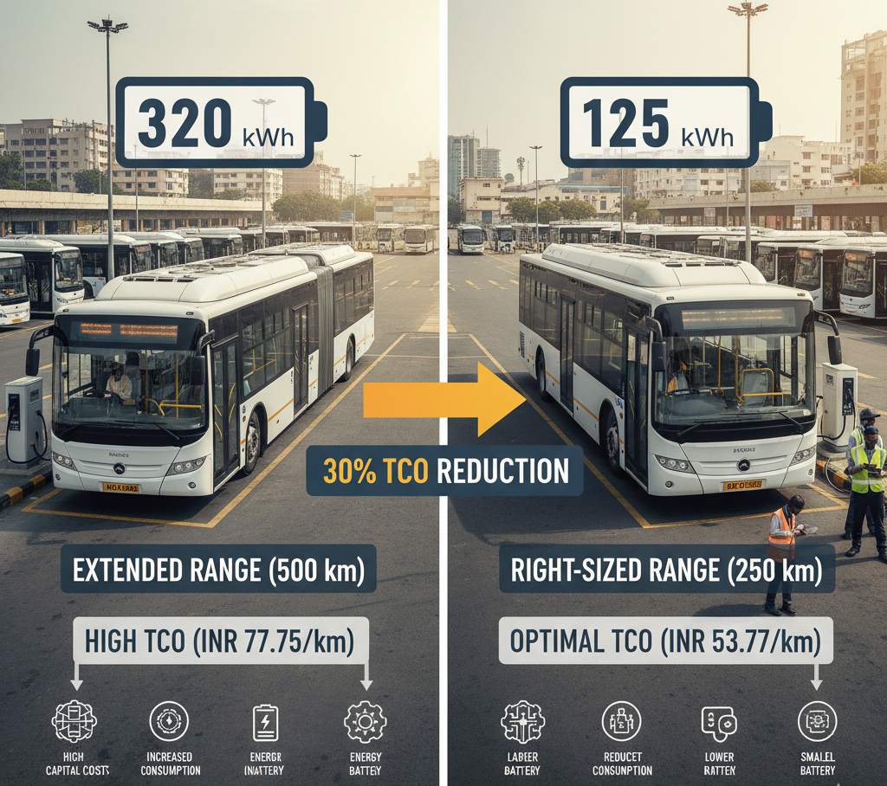
This counterintuitive finding reveals a critical insight for fleet operators: right-sizing battery capacity to match actual operational requirements dramatically improves TCO per kilometer. A fleet operator deploying 125 kWh battery packs in electric buses instead of 320 kWh configurations can reduce TCO per km by nearly 30%, from INR 77.75/km to INR 53.77/km in Indian urban transit scenarios.
Energy Consumption and Charging Strategy Implications
Larger battery packs increase vehicle mass, which directly elevates energy consumption across all driving cycles. Research across three user types—urban commuters, rural commuters, and long-distance drivers—demonstrates that using a 116-kWh battery instead of a 28-kWh battery increases energy consumption by 13.4 to 16.9% annually.
This energy penalty carries dual impacts on fleet economics:
Direct Operating Costs: Higher energy consumption translates directly to increased electricity expenses. For fleet operators, this compounds over thousands of kilometers annually, creating measurable cost-per-kilometer disadvantages that persist throughout the vehicle's operational life.
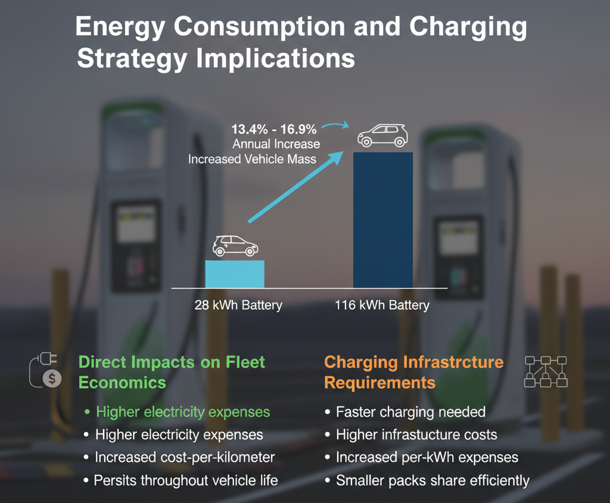
Charging Infrastructure Requirements: Larger packs often necessitate faster charging protocols to maintain fleet productivity. While faster charging reduces vehicle downtime, it increases infrastructure costs and per-kWh charging expenses due to demand charges and thermal management requirements. A fleet deploying smaller battery packs can often share charging infrastructure more efficiently, further reducing the cost per vehicle.
Battery Chemistry and Fleet Economics
The choice between battery chemistries—particularly the comparison between Lithium Iron Phosphate (LFP) and Nickel Manganese Cobalt (NMC)—profoundly affects long-term TCO for fleet operators.
LFP Batteries deliver superior advantages for fleet applications despite lower energy density:
- Cycle Life: LFP batteries achieve 3,000-5,000 charge-discharge cycles compared to NMC's 1,000-1,500 cycles, directly reducing replacement frequency and associated downtime.
- Cost Trajectory: LFP batteries cost approximately $80-$100/kWh versus NMC's $120-$150/kWh, representing a 30% cost advantage that improves further as supply chains mature.
- Safety and Thermal Stability: Superior thermal characteristics eliminate costly thermal management complications and reduce insurance premiums for fleet operators.
- Temperature Performance: LFP's functionality across -20°C to 60°C ranges proves critical for fleets operating in India's diverse climatic zones.
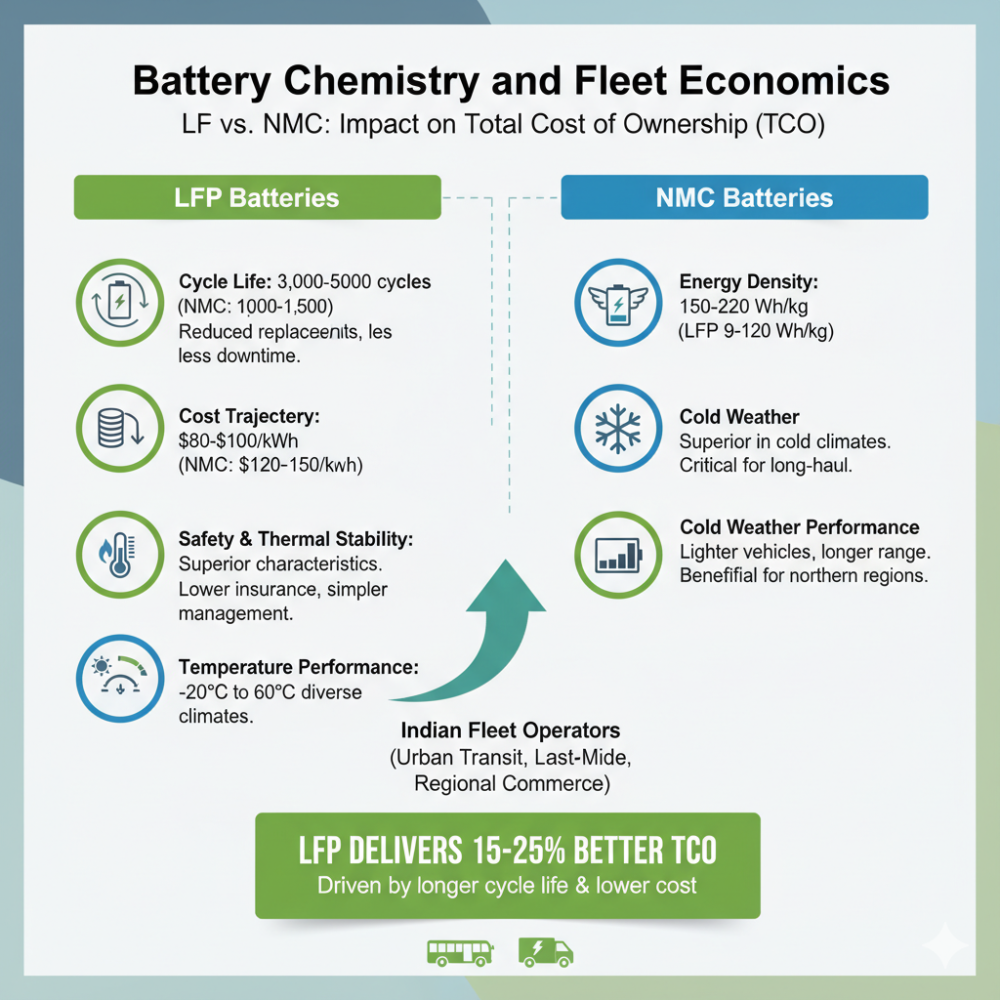
NMC Batteries retain advantages for specific use cases:
- Energy Density: At 150-220 Wh/kg versus LFP's 90-120 Wh/kg, NMC enables lighter vehicles and longer range—critical for long-haul commercial operations where payload capacity and distance per charge directly impact revenue.
- Cold Weather Performance: NMC's superior performance in cold climates matters for fleets operating in northern regions.
For most Indian fleet operators managing urban transit, last-mile delivery, and regional commerce, LFP's dramatically longer cycle life and lower cost typically deliver 15-25% better TCO than NMC alternatives, even accounting for slightly higher energy consumption.
Battery Degradation: Planning for Replacement Costs
Battery degradation fundamentally reshapes TCO calculations by creating predictable replacement events within vehicle operating lives. Modern EV batteries now degrade at approximately 1.8% annually, representing a 22% improvement from 2019's 2.3% degradation rate.
Most fleet operators must plan for battery replacement when State of Health (SoH) drops below 70%, which occurs after approximately 8-15 years of operation depending on usage patterns and environmental conditions. This replacement event creates a significant cost component that dramatically affects 10-year TCO projections.
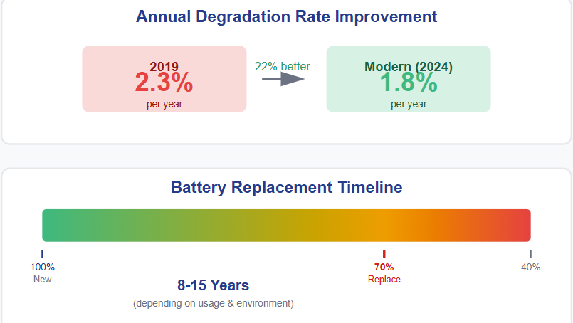
Fleet operators employing strategic sizing approaches account for this degradation in their initial purchase decisions. Smart sizing strategies incorporate replacement cost anticipation, with some studies suggesting replacement costs of €37.33/kWh—meaning a 300 kWh pack replacement could cost INR 7-9 lakhs (approximately).
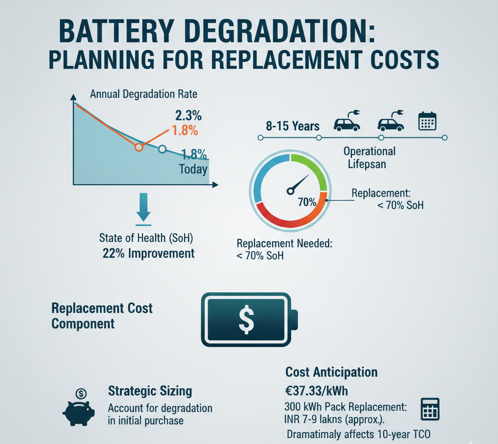
Degradation drivers that fleet operators can control:
- Charging Practices: Frequent fast charging accelerates degradation more than overnight slow charging. Operators implementing smart charging strategies—utilizing time-of-use tariffs to shift charging to off-peak hours—reduce both electricity costs and battery stress simultaneously.
- Temperature Management: Extreme heat accelerates battery degradation. Thermal management systems add cost but extend battery life sufficiently to justify investment in high-utilization fleets.
- Driving Patterns: Hard acceleration, rapid braking, and sustained high-speed operation increase cyclical aging. Driver training programs targeting efficient operation reduce degradation by 10-15%.
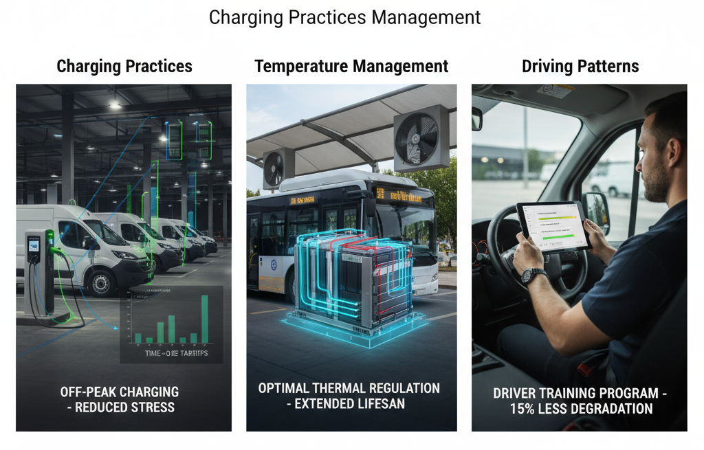
Impact on Cost Per Kilometer: Quantified Analysis
The relationship between battery pack specifications and cost per kilometer manifests across multiple dimensions:
- Capital Cost Component: An electric bus with a 125 kWh battery pack costs INR 53.77/km versus INR 77.75/km for a 320 kWh variant over a 10-year period—a 30.8% difference driven entirely by battery capacity decisions.
- Operational Cost Component: Smaller battery packs reduce electricity consumption by 8-10% annually, directly lowering per-kilometer operating costs. In markets with rapidly escalating electricity tariffs, this efficiency advantage compounds significantly.
- Infrastructure Cost Distribution: Deploying smaller battery packs enables faster infrastructure cost amortization through higher vehicle utilization. A 300-bus fleet using 125 kWh packs requires less total charging infrastructure than an equivalent fleet using 320 kWh packs, reducing infrastructure cost per vehicle by 15-20%.
- Maintenance and Replacement Costs: Battery chemistry selection determines replacement frequency. LFP's longer cycle life reduces the likelihood of replacement within first-owner vehicle lifecycles, eliminating a potential INR 7-9 lakh cost event.
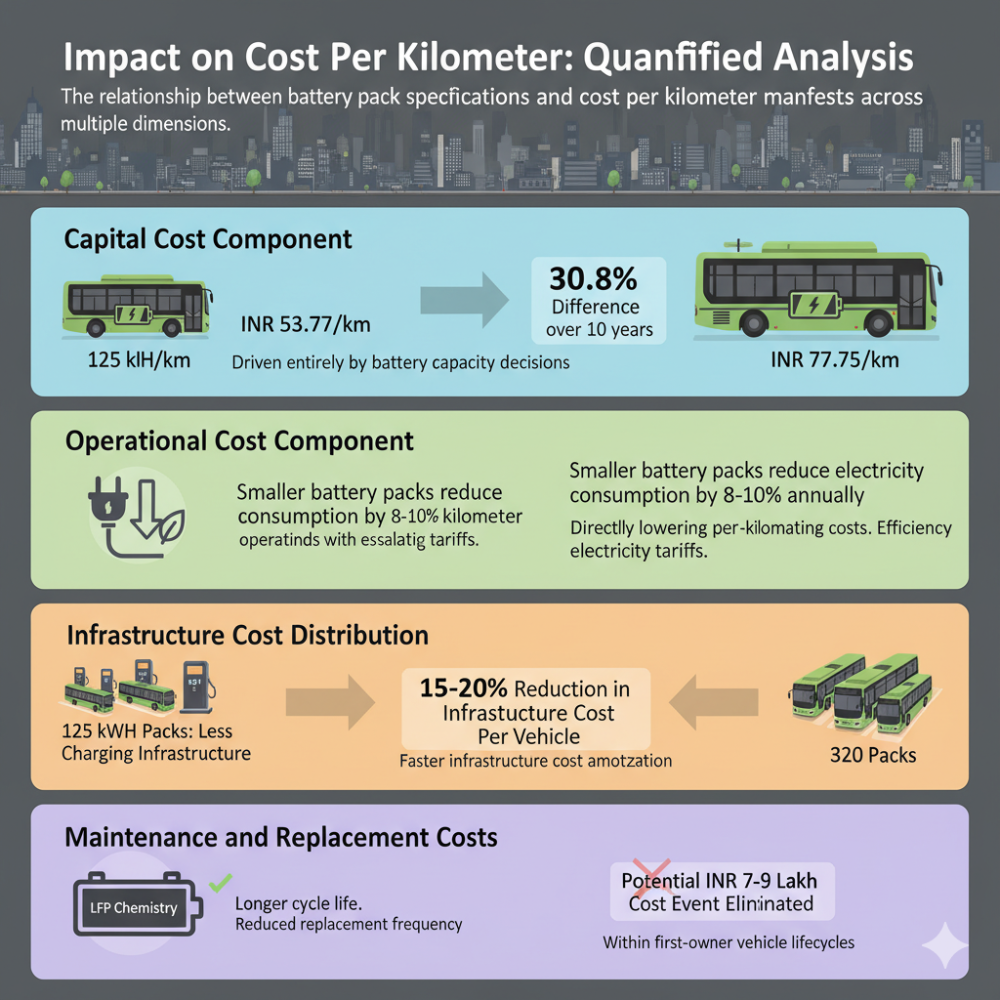
Strategic Battery Sizing for Indian Fleet Operations
Indian fleet operators face unique optimization opportunities due to the nation's specific operational characteristics:
Urban Transit: 12-meter electric buses operating 200 km daily can profitably deploy 125-150 kWh packs with strategically placed fast chargers, reducing TCO per km to INR 44-54 compared to INR 65.5 for diesel equivalents.
Last-Mile Delivery: Commercial vehicles averaging 150-200 km daily can operate profitably with modular battery systems, enabling shared charging infrastructure and reducing peak-demand charges by 20-30%.
Regional Commerce: For 250+ km daily operations, right-sizing becomes critical—oversizing batteries by 50% to address rare long-distance requirements adds INR 15-20/km to operating costs without corresponding revenue benefits.
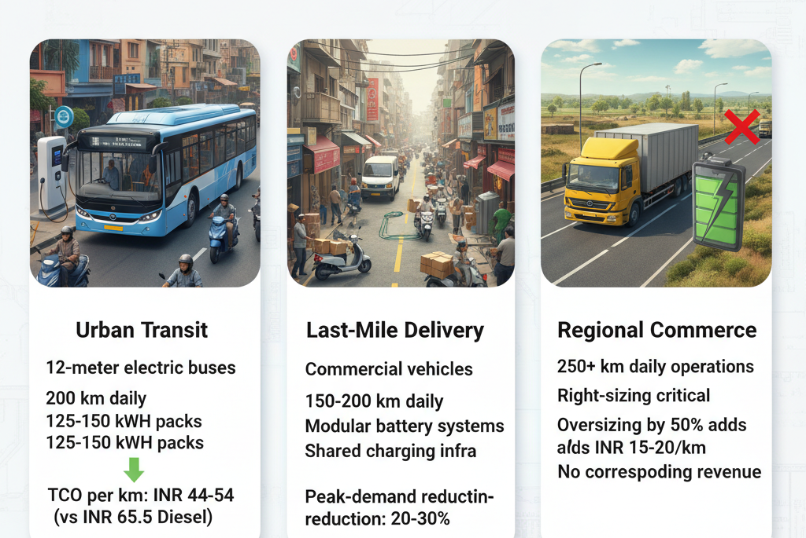
Financial Modeling and Charging Infrastructure Decisions
The battery pack selection irreversibly determines charging infrastructure requirements, which represent 15-30% of total fleet TCO for depot-based operations. Smaller battery packs enable shared fast-charging infrastructure, reducing per-vehicle infrastructure cost by 25-35% compared to one-slow-charger-per-vehicle scenarios.
Fleet operators can dramatically reduce upfront infrastructure investment by partnering with infrastructure-as-a-service providers, converting capital expenses to operational expenses spread over vehicle lifespans. This approach proves particularly effective for operators deploying right-sized battery packs, as lower electricity consumption reduces monthly service costs.
Electricity tariff considerations: Markets with volatile electricity pricing—common across Indian states—benefit significantly from demand-side response optimization. Right-sized batteries enable more efficient charging schedule management, reducing peak-demand charges by 15-20% compared to oversized packs requiring rapid charging windows.
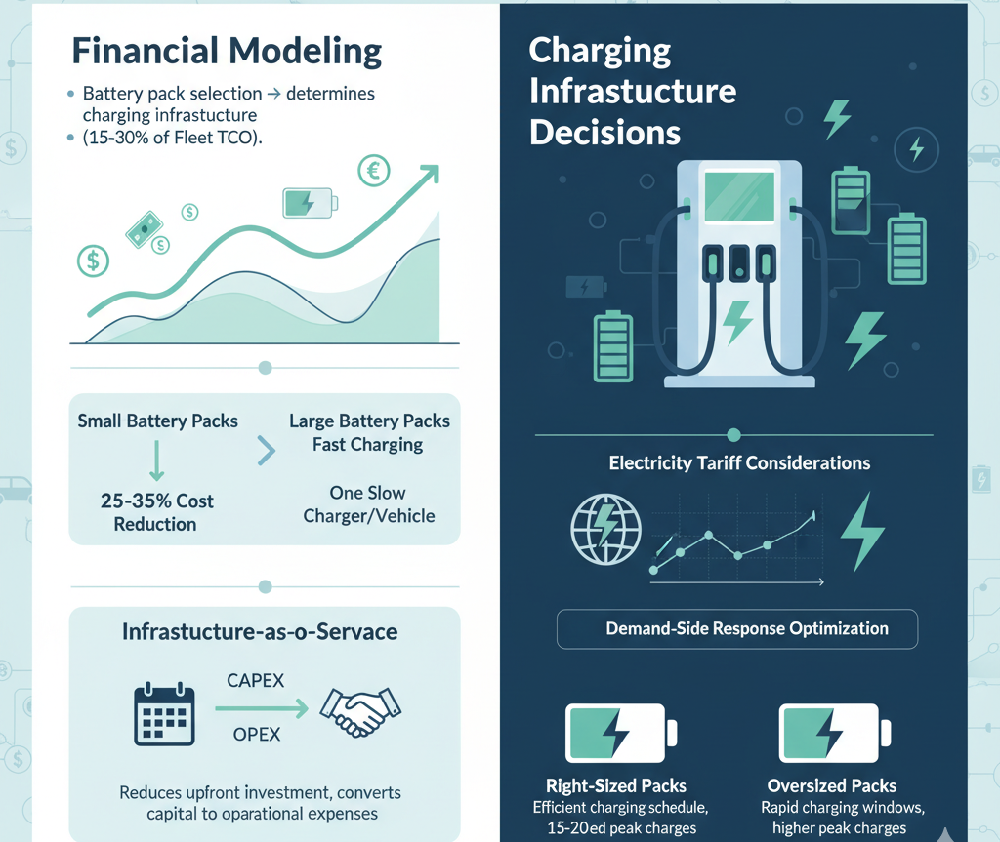
Battery Degradation and Residual Value
Residual values of electric vehicles depend almost exclusively on battery State of Health. A vehicle retaining 85% SOH commands 40-50% higher residual value than one at 65% SOH, creating substantial TCO implications when vehicles are either resold or repurposed.
Fleet operators managing residual value risk should prioritize LFP chemistry and conservative charging practices. Battery management systems that limit charging to 80% capacity during normal operations preserve residual value at the cost of only 5-8% range reduction—a worthwhile tradeoff for commercial fleets.
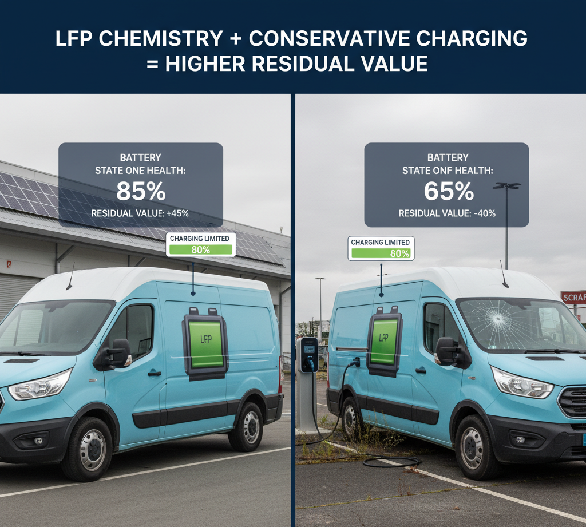
Sensitivity Analysis: Battery Pack Impact on TCO Variance
Real-world fleet operations reveal that battery-related decisions contribute disproportionately to TCO uncertainty:
- A 20% increase in battery pack cost increases overall vehicle TCO by only 4-6%, but extends range by 25-30%, creating non-linear economic relationships that reward careful analysis.
- Electricity tariff increases from INR 5/kWh to INR 8/kWh increase e-bus TCO by only 6%, demonstrating that battery efficiency gains often outweigh fuel cost volatility concerns.
- Battery degradation variations of ±0.5% annually create TCO variance of ±8-12% over 10-year periods, justifying investment in premium battery management systems.
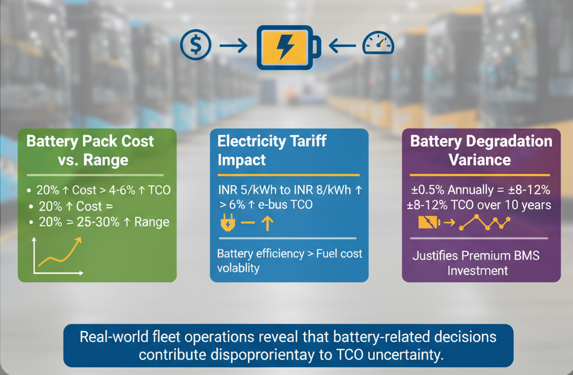
Conclusion: Strategic Battery Pack Decisions Drive Fleet Economics
The battery pack represents far more than a component purchase—it embodies the foundational decision that determines fleet profitability across entire operational lifespans. Fleet operators who approach battery selection through rigorous TCO analysis, accounting for real operational patterns, electricity market dynamics, and degradation trajectories, can reduce cost per kilometer by 20-35% compared to operators deploying one-size-fits-all approaches.
In India's emerging electric fleet market, competitive advantage flows to operators who recognize that smaller right-sized battery packs with efficient charging strategies consistently deliver lower cost per kilometer than larger, over-specified alternatives. This counterintuitive insight—that less battery often costs less to operate—represents the single most important lesson for fleet operators navigating the electrification transition.